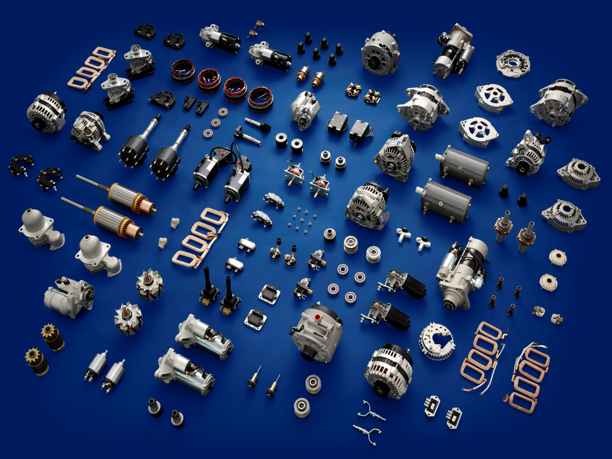

-

WAI Global
Overview
A Leading Parts Manufacturer for the Aftermarket
Innovation and creativity are the forces that drive WAI’s success. Since its founding, WAI has worked relentlessly to meet the ever-changing needs of its customers in the automotive, heavy duty and power sports aftermarket. This includes an unwavering commitment to be “first-to-market” with the latest model products available.
-
WAI Global
As a leading parts manufacturer, sourcing, and distribution/logistics company, WAI offers its aftermarket customers ready access to an extensive range of products including:
» 100% new alternators, starters and their components
» Voltage regulators, Rectifiers, Test Equipment
» 100% new Ignition Distributors
» Ignition modules and Coils
» Manifold Air Pressure (MAP) and Mass Air Flow (MAF) sensors
» 100% new Wiper motors
» Engine management components
-
WAI Global
A Dominant Global Presence
Consistently meeting the parts needs of the more than 105 countries to which WAI sells requires world-class parts manufacturing facilities and a robust distribution network. WAI’s team is comprised of over 800 employees in 14 countries including the United States, Canada, Brazil, Europe and China. This network operates with exceptional precision under one united goal – to provide customers with the products they need, when they need them.
-
WAI Global
 -
WAI Global
Login